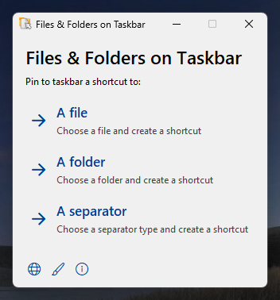
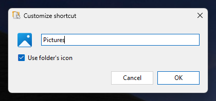
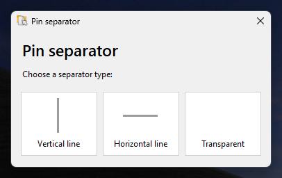
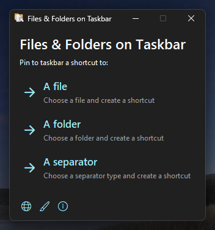
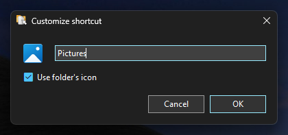
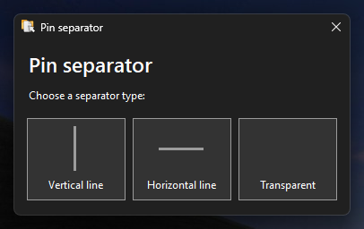

A simple and easy to use tool for pinning files and folders to your taskbar on Windows 10 and 11.
Screenshots
Note: These are the screenshots of the canary (2.0.0) version.






Features
- User friendly interface
- Pin files, folders and separators to your taskbar without any effort
- Customize the shortcut before creating it
- Option to use the folder's icon for the shortcut (comming soon for files)
- Light and dark themes and localization support
Supported languages
- English
- Română (Romanian)
Get Files & Folders on Taskbar
Latest version: 1.1.1
You can get Files & Folders on Taskbar by clicking the download button for the installer or portable build for the appropiate architecture for your computer down bellow.
Canary version: 2.0.0
The canary builds available bellow contain the latest fixes and features, but they are very unstable and may contain bugs.